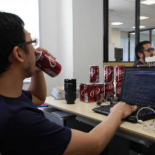
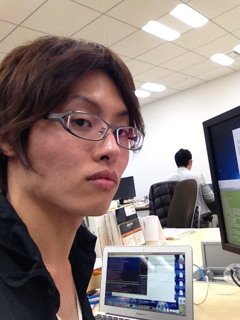

企業内でGitHubを使うためのソリューションであるGitHub Enterpriseにフォーカスしたイベントです。GitHub Enterpriseを利用しているエンジニアとGitHub Enterpriseについてしゃべったり交流できます。
2013年1月23日(水) 開場：18:30、終了：22:00
東京都港区六本木6-10-1 六本木ヒルズ森タワー
グリー株式会社
ハッシュタグ: #greetech02
大場光一郎 @koichiroo |
グリー株式会社 開発本部インフラストラクチャ統括部クラウド基盤チーム所属のインフラエンジニア。開発基盤整備のためにGHEを導入運用する一方で、プロダクション環境のミドルウェアの開発も推進する。 |
Takafumi ONAKA @onk |
大仲能史 2006年に株式会社ドリコムに入社後、SNS やブログの構築を手がける。2009年4月、ソーシャルゲーム事業部の立ち上げに伴いソーシャルゲームの開発・インフラ構築に携わる。以来、ドリコムのソーシャルゲームを支え続けている。 |
高井直人 @takai |
1977年横浜生まれ、35歳。大学在学中からネットワークやWeb技術にたずさわる。Web制作会社、システムインテグレータを経て、現在は大手レシピサイト運営会社に勤務。主に開発基盤の整備、開発者の支援に従事している。 |
Yohei Fushii @hakobe |
株式会社はてなのアプリケーションエンジニア。はてなブックマークの開発担当。京都でPerl/JavaScript/Objective-Cあたりのコードを陽気に書く日々。開発合宿でGitリポジトリビューアを作ったりしていたら、GHEの導入もすることになりました。 |
|  Gosuke Miyashita @gosukenator |
paperboy&co. のテクニカルマネージャーとして技術全般を見る傍ら、日本におけるドクターペッパー消費量の拡大に貢献している。5児の父。その他詳細は WEB+DB PRESS Vol.72 にインタビュー記事があるので読んでね。 |
|  吉田拓真 |
株式会社ディー・エヌ・エー IT基盤部ネットワーク＆セキュリティG。決済子会社のインフラ担当, 昨年よりGHE導入から運用周りを兼務。GHE障害のたびにPCへOctacatシールを貼り続ける日々。。。 |